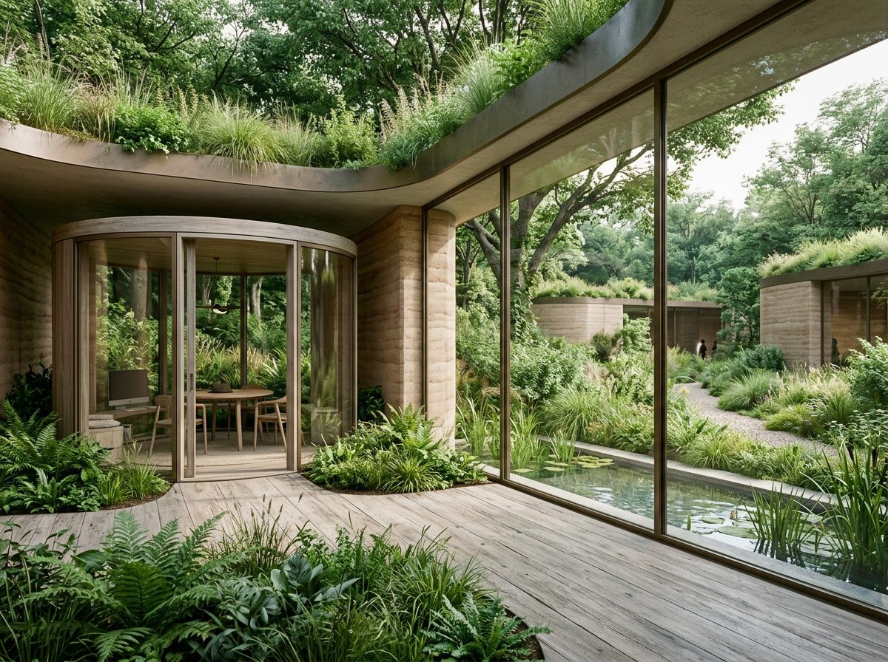
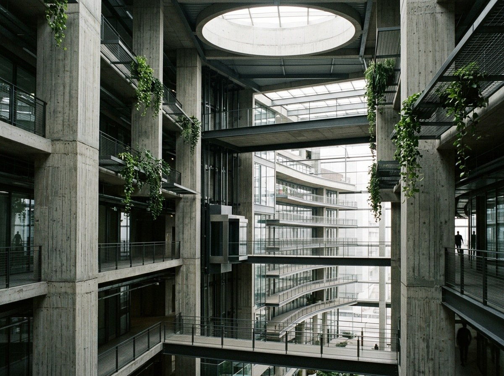
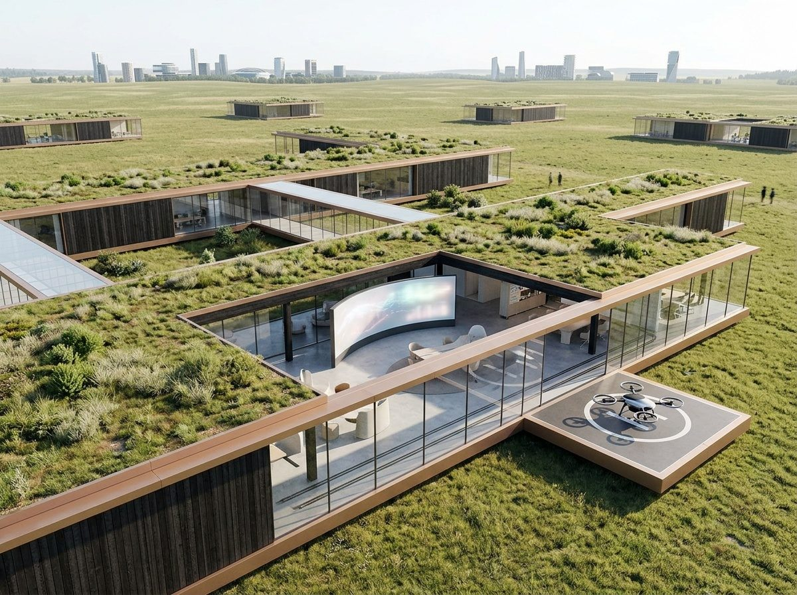
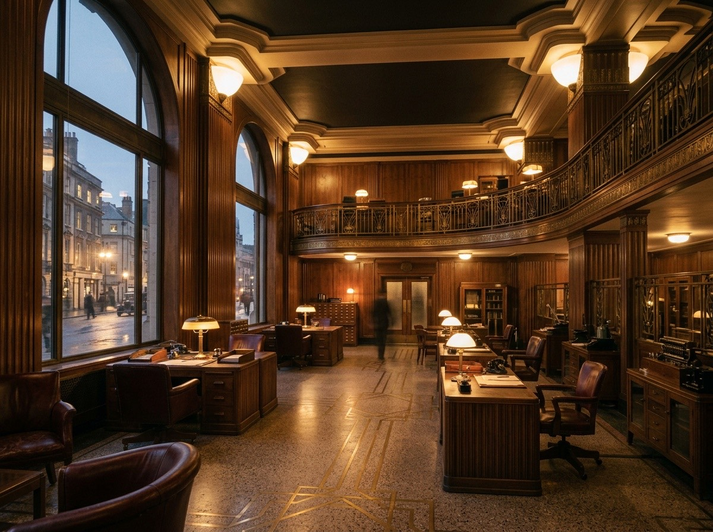

The questions
6 screens · 20 tables · 2026-09-22
1How do you imagine your future cognitive city?
The garden city
The vertical city
The dispersed city
Neo Retro
or — No future fits us, skip
2What is your city made of, and how does it feel?
- White and steel
- Soft pastels and rounded edges
- Concrete and stone
- Earth and timber
Which other materials or palette would you want to see?
3How much of the outdoors is inside?